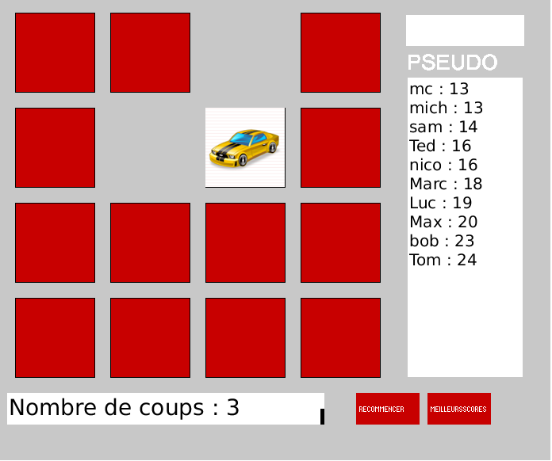
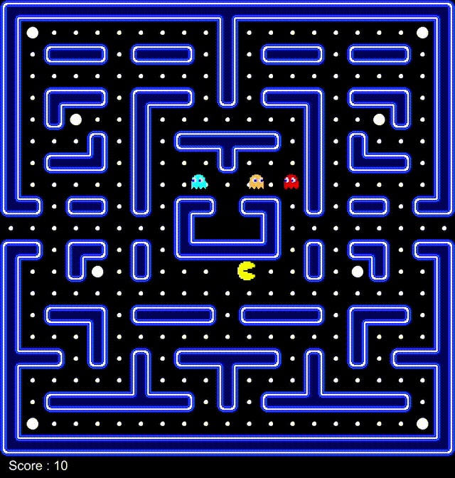
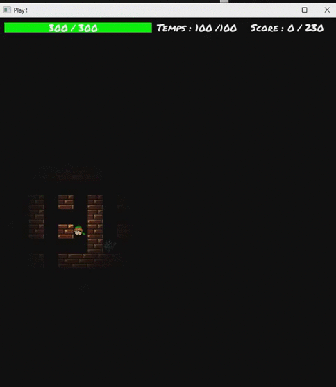
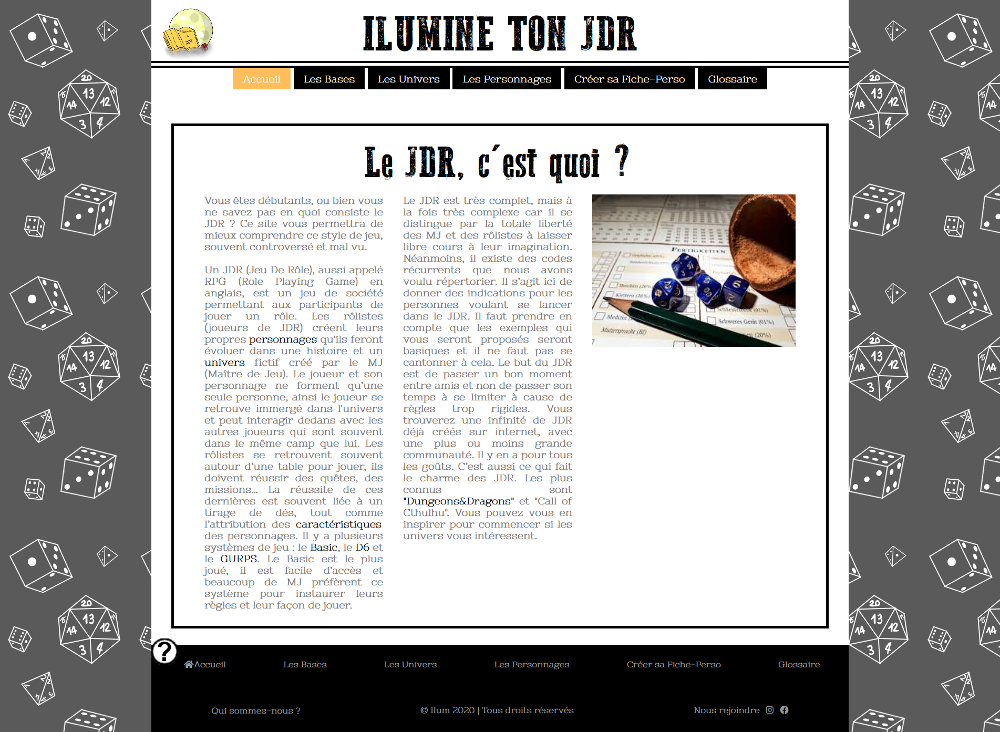
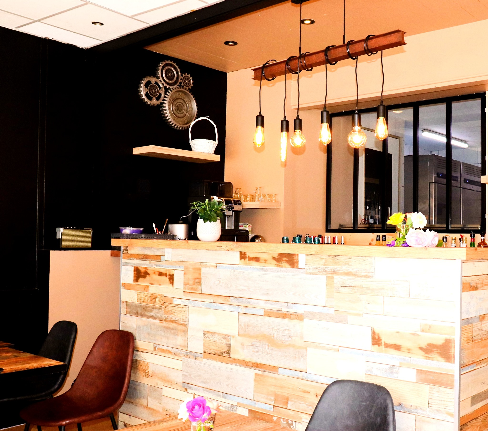

Memory
2018
A 2-members project
Programming language used:
Java
Software used:
Processing 2.2.1
Morgane KELLER
When I was 9, I suddenly decided I wanted to be an IT girl, like an evidence, even if I did not know what it was. Since then, my choices were made based on this dream and my dream became clearer: I want to become a web developer. To fulfill this dream, I learned HTML, PHP, JavaScript, CSS. But I also know a lot of others development methods, for database development for example or computer video games.
| 2021 | DUT Informatique (2-year university diploma in computer science) |
|---|---|
| University of Savoy / IUT Annecy - Annecy-le-Vieux, France | |
| 2019 | French Baccalaureate SSI (High School diploma specialized in science and computer engineering) with specialty ISN (IT class) |
| Anna de Noailles High School - Evian-les-Bains, France |
| Since November 2020 | Des Coeurs À Sauver (animal protection association) - Annecy, France |
|---|---|
| As a volunteer in charge of foster family, I must entrust cats to families, to get news of cats, make sure they have their vet appointment | |
| Since May 2020 | Lie Vain Lou (restaurant) - Faverges, France |
| Team project (Second-year university project) As a communication officer and member of the team project, I design a restaurant website with WordPress | |
| October 2020 | Des Coeurs À Sauver (animal protection association) - Annecy, France |
| As a volunteer substitute in charge of foster family recruitment, I have to analyze family files, write contracts and contact families | |
| September 2020 | Des Coeurs À Sauver (animal protection association) - Annecy, France |
| As a temporary volunteer, I had to visit people who want to adopt a cat or become foster family for cat, and I had to send a report to the association | |
| Summer 2019 | Cora (hypermarket) (bakery pastry part) - Amphion-les-Bains, France |
| (July and August) | As a bakery pastry employee, I had to sell, advise, put on shelves, manage stocks and pack |
My projects(MOUSE OVER PICTURES TO SEE DETAILS!)

|

|

|
|

|

|
Designing dynamic webpages using CSS, HTML, PHP and JS
Creating and communicating with a database via SQL language (ORACLE, PostgreSQL and MySQL)
Administrating and managing Databases with PhpMyAdmin
Using text editors, spreadsheets and slide editors (Microsoft office suite)
French
English
I am curious, observant and listening
I am able to work in a team
I know how to communicate well with clients, colleagues and superiors
I really like to help animals (by helping them to found a family via the association Des Coeurs À Sauver) but also people (by giving my blood for example)
During my free time, I read (Marc Levy, Guillaume Musso, etc.) or play video games (Animal Crossing, Assassin's Creed, Bendy and the ink machine, Watch Dogs, etc.)
Date of birth: 11 May 2001
French
Adress: 12 Bellevue road,
74940, Annecy - France
Phone: +33(0) 6 73 62 85 08
Email: morganekeller11@gmail.com
English teacher - IUT Annecy
stephanie.bouchon@univ-savoie.fr
English teacher - IUT Annecy
stephanie.bouchon@univ-savoie.fr